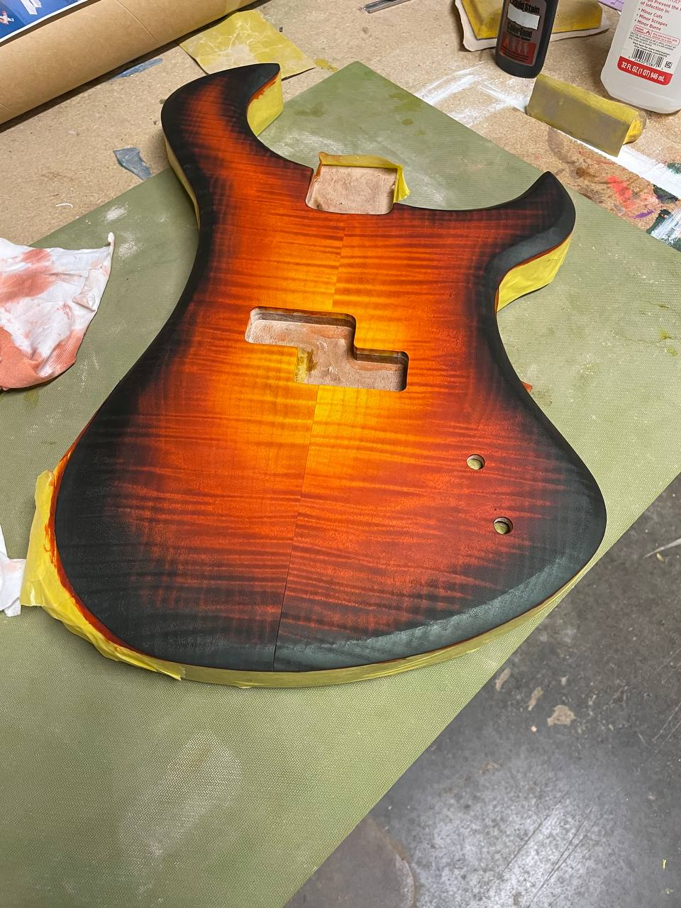
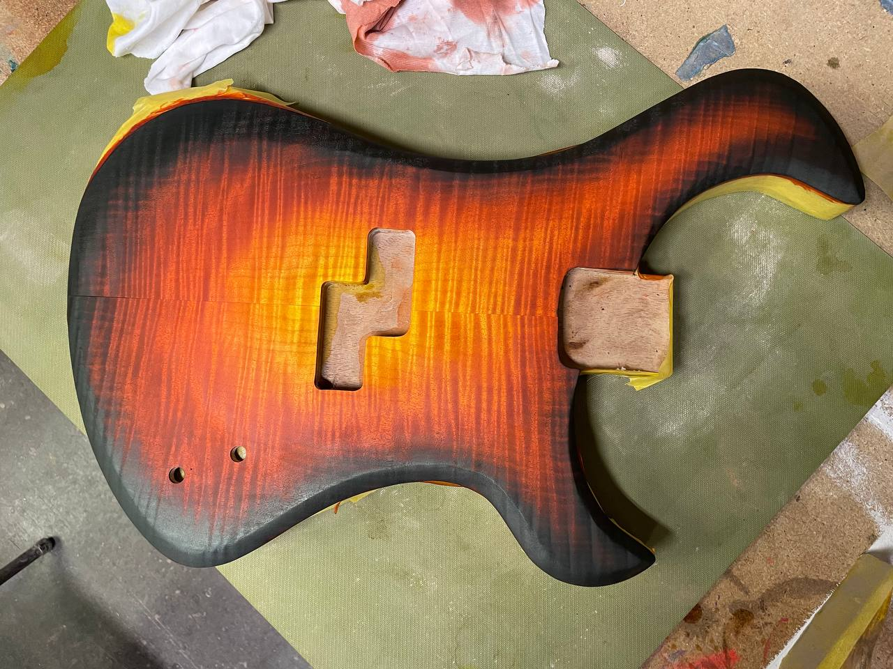
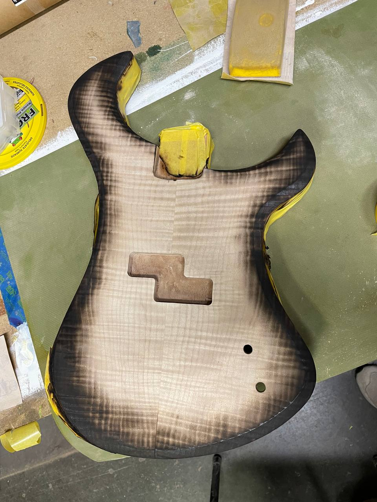
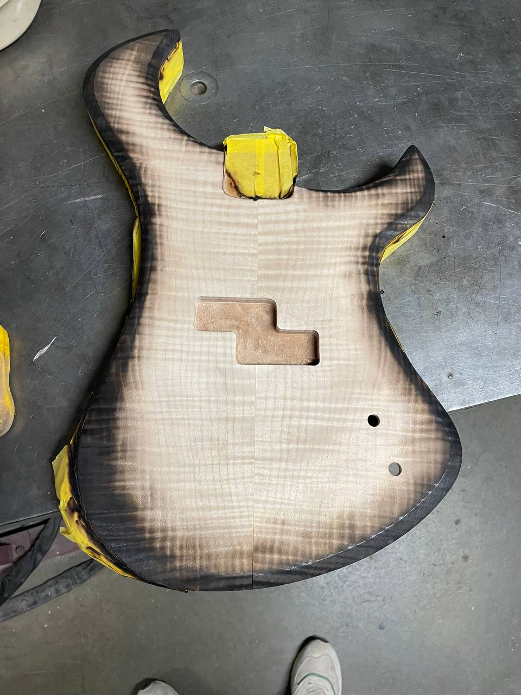
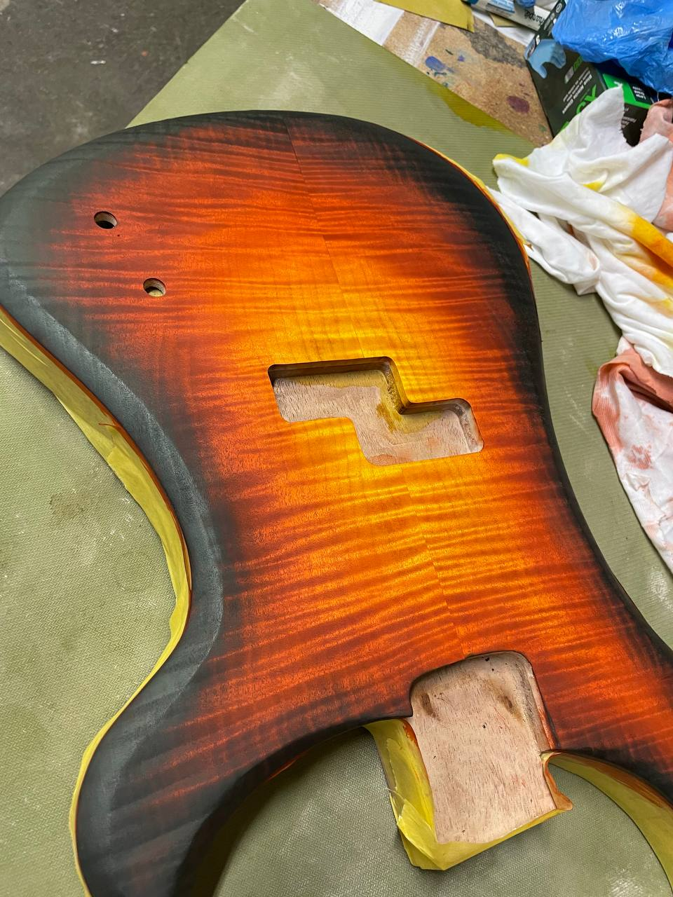
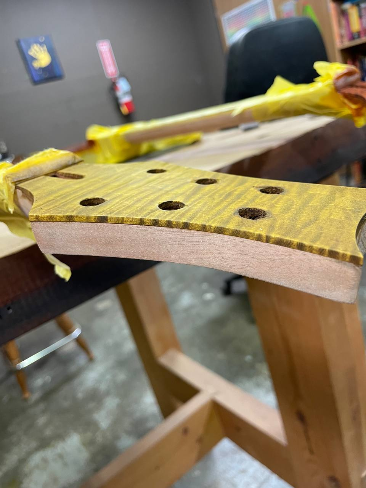
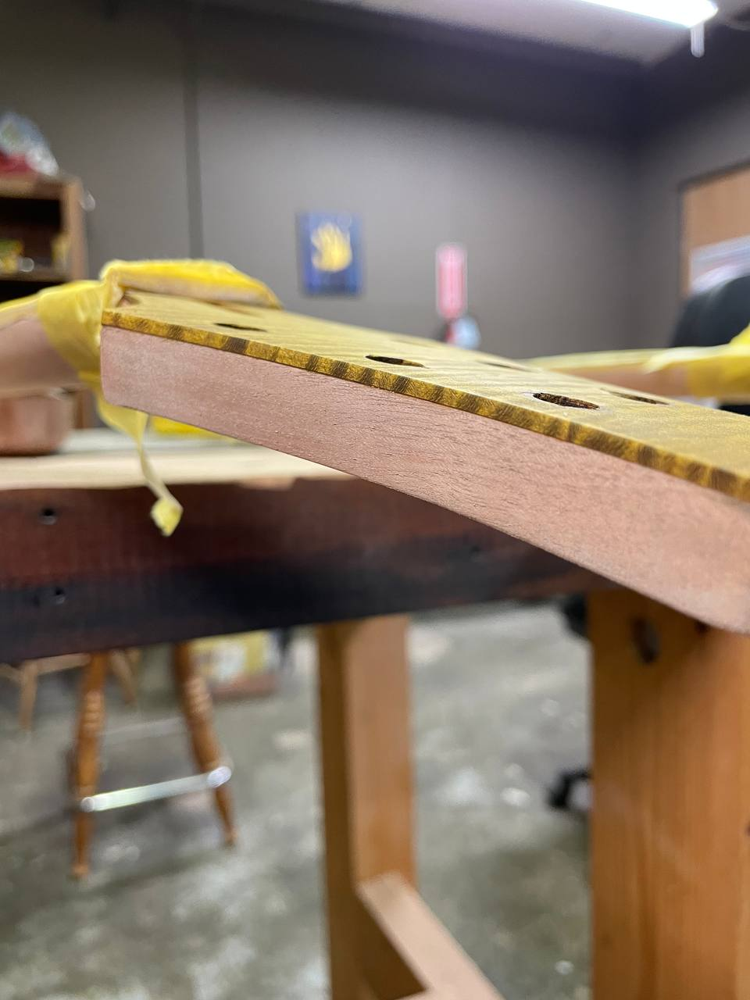
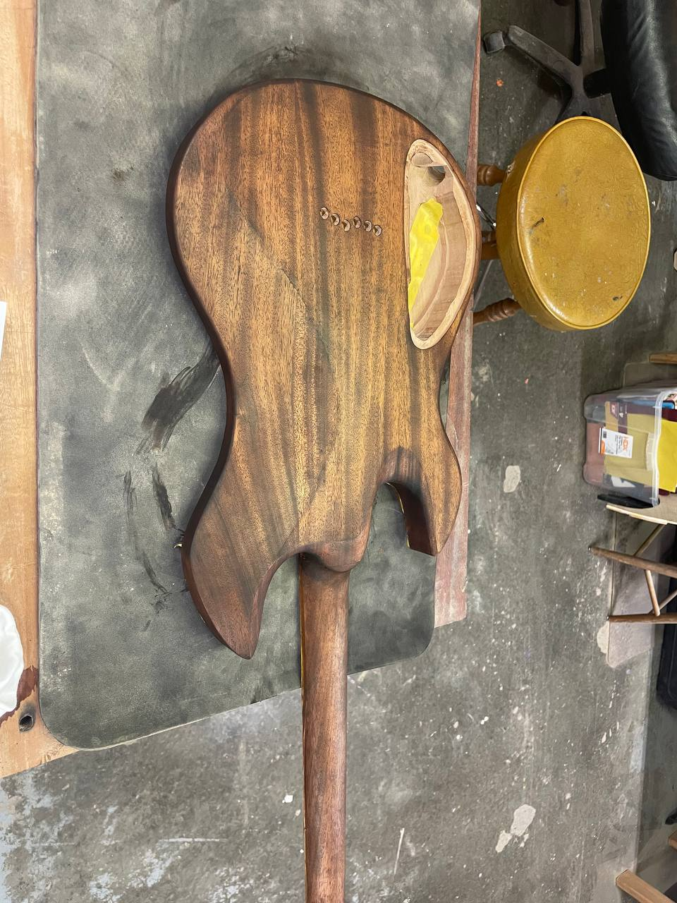
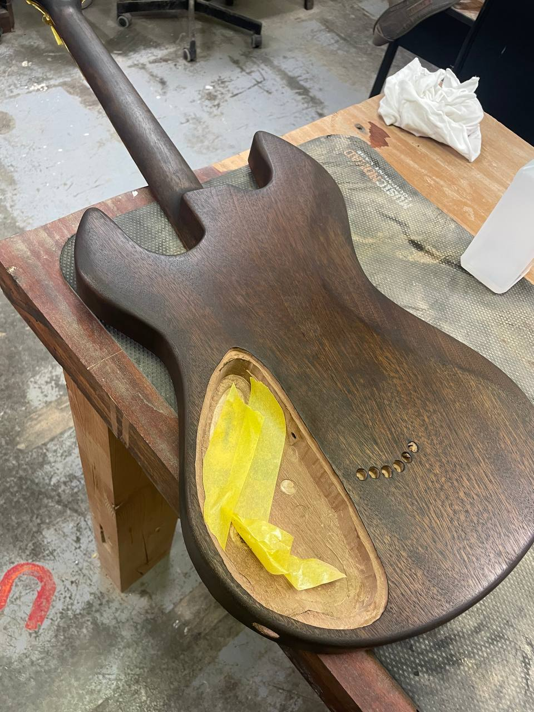
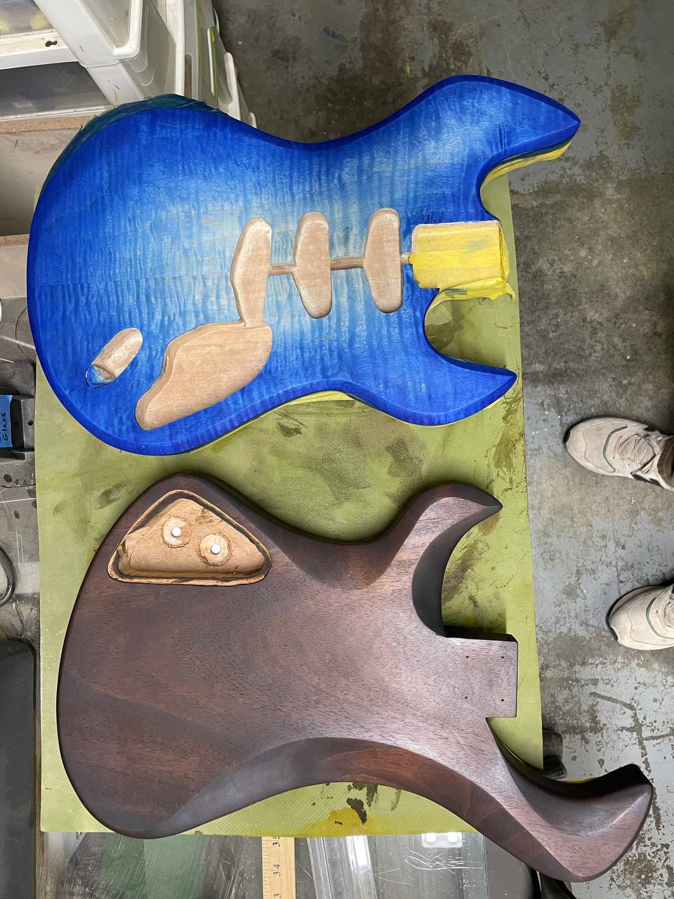

Tobacco sunburst over flame maple. Walnut back. P+J routing. Four strings on a guitar-shaped body.

A bass was always going to happen. I'd been thinking in guitar logic for a few years — scale length, string tension, pickup headroom — and wanted to understand it from the other side. Four strings changes everything about how you hear a body resonating.
The body is guitar-proportioned — same ergonomics you'd expect from a PRS, not the big slab of a P-bass. The top is flame maple stained in a tobacco sunburst by hand, amber in the center bleeding all the way to black at the edges. The back is walnut, which is its own thing entirely — that purple-brown grain looks nothing like the front. Two different instruments depending on which side you're looking at.
The stain sequence took four passes to get the burst right. The raw maple is beautiful before anything touches it — the flame figure already doing its thing. Amber came in first at center, then built toward the edges in progressively darker passes until it hit jet black at the rim. That last pass is the tensest part — too dark and you lose the transition, too light and the fire effect doesn't read.
Split P-bass style humbucker in the route — the characteristic angled offset pair. The neck is flame maple, same wood as the top, stained honey-amber with dark grain contrast and binding at the edge. Still in finishing stages, but the front is done.








